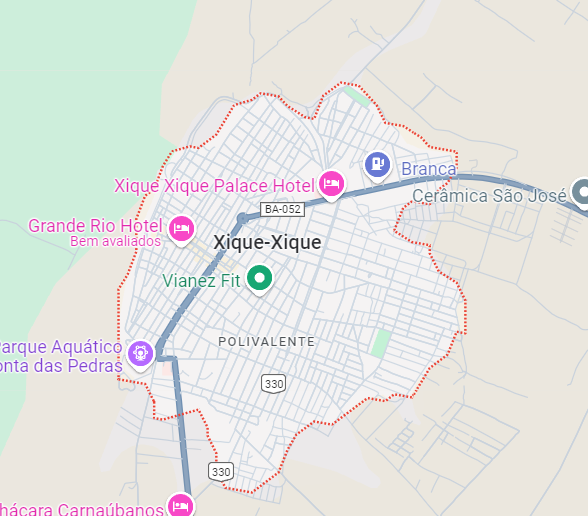
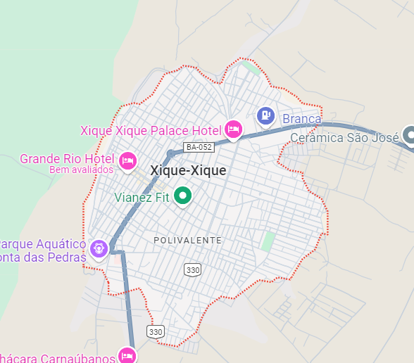

EXPOSIÇÕES: Agatha de la'Roche
Agatha de la'Roche foi uma socialite francesa do século XIX, conhecida por sua vida de excessos e escândalos. Nascida em 1847, filha de uma família aristocrática de Paris, ela rapidamente se tornou uma figura de destaque nos círculos sociais mais exclusivos da Europa. Seu estilo de vida extravagante, com festas opulentas e viagens luxuosas, a colocou sob os holofotes da alta sociedade. No entanto, sua fortuna começou a declinar após uma série de más decisões financeiras e relacionamentos controversos, incluindo um casamento fracassado com um conde endividado. Apesar dos esforços para manter sua imagem de glamour, Agatha enfrentou a ruína, sendo conhecida como a "Rainha do Desastre" nos jornais da época. Sua queda da graça tornou-se um dos maiores tópicos de fofoca da sociedade parisiense. Agatha passou seus últimos anos em relativo anonimato, vivendo de lembranças de sua antiga glória. Hoje, ela é lembrada como um símbolo de como o luxo e a fama podem rapidamente se transformar em declínio e esquecimento.
 

Vídeo sobre o nossa cidade:
Faça uma visita!